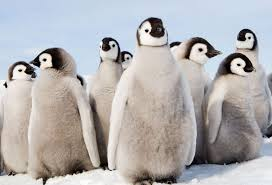

Penguins, despite being birds, lack the ability to fly and instead move by waddling upright. They utilize their flippers for swimming through aquatic environments. Remarkably, penguins are among the select few animal species known to form lifelong bonds with their mates. Their diet encompasses shrimp, fish, crabs, and squid. Primarily found in the Southern Hemisphere, including regions like Australia and Antarctica, penguins typically have a lifespan of 15 to 20 years in their natural habitat.
